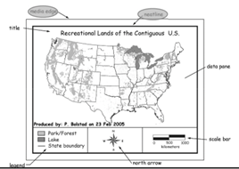
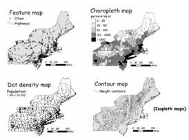

Spatial Data Representations
Essential concepts for spatial data representations.
Learning Objectives
- Spatial Data Representations
- Conceptualizations of Spatial Entities (Field and Object View)
- Types of Attribute Data
- Common Data Models
Map Making
Map Identities
- Title: a few words or a single sentence which informs the “where” and the “what” about the map
- Data Pane: map visual
- North Arrow: shows direction
- Neatline: inside media border, encapsulates datapane
- Media Border/Edge: very outside border
- Neatline and media border are not usually required, and are dependent on the publication
- Legend: provides information about what things like colors and boundaries
- Scale / Scale Bar: provides scale of map to reality

Maps for Representation
- Feature Map:
- cities
- highways
- Choropleth Map:
- shows density based on specific units
- attribute is shown by a constant value
- boundaries are artificial
- assume the value is the same for an entire spatial boundary, which may not be true for the entire spatial boundary (first glimpse at scale and MAUP)
- Dot Density Map
- maps individual points
- more points equals higher density
- Contour Map (Isopleth Map)
- line features to represent something (i.e. elevation)
- limitations can be constant or minute changes, which may not be represented

Real World Abstractions and Complexity
To represent information about this world in maps or digital systems, we need to simplify what we see. This requires generalized, abstracted, and approximate information about entities, their location and properties.
Why is this a requirement:
- Data may not be available
- May have too much data and need to choose the important aspects to simplify
Mapping and Modeling Reality
- Entities: things in the real world which are represented by (cartographic) objects that contain essential characteristics
- Can be biased by GIS data developer and purpose of map
- Objects: abstract, imperfect representations of reality stored in a spatial database
- Biases can come from:
- time constraints
- design decisions
Data Model
A consistent way of defining and representing objects in a databse, and of representing the relationships among the objects.
Spatial Data Models (usually two parts):
- coordinate data: pairs or triplets of numbers defining location
- attribute data: text, numbers, images, etc. (non-spatial data)
Spatial Data Models Construction:
- representation of objects in a spatial database and spatial relationships among them (topology)
- coordinate data: point of origin + spatial location + extent
Spatial Object Types
Representation of entities graphically as spatial objects:
- points (0-Dimensional)
- lines (1-D)
- areas (2-D)
- surfaces (2.5-D)
- volumes (3-D)
These can be used concurrently to represent the same thing based on your objective.
Attribute Data
- Non-spatial data for describing the characteristics of objects
- Nominal: descriptive (i.e. land use)
- Ordinal: ranked (city size - small, medium, large)
- Interval / Ratio: ranked and absolute difference
- interval: meaningful differences between values (temperature in Fahrenheit and Celsius, pH)
- ratio: contains a zero point (heat/weight, temperature in Kelvin)
Thematic Layers
- separate layers for each view
- same spatial locations but represent different thematic entities
- combining information from different spatial datasets
- multiple objects from one entity (or several ones)
Multiple Objects from a Single Entity
- Typically store different object types (even from the same entity) in different layers OR differentiated through attributes
- Lake Example:
- municipal water source
- recreation area
- flood control sink
- wildlife habitat
Conceptualization of Spatial Phenomenon
- Object View: empty space contains discrete objects (lakes, land cover, etc.)
- Field View: phenomena varying over space continuously (elevation)
Ultimately, how do we define areas in an image:
- What is a forest?
- What is the map for? Or, who is it for?
- The natural instinct is to draw a line, but that can be difficult with things like gradual changes
- Or even classification challenges like a forest with a bush ground cover
Raster vs. Vector
- Raster:
- Vector: